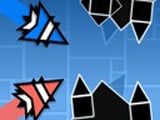

Геометрия Даш - Двойная Волна
Что может быть лучше, чем одна волна? Только две! В игре "Геометрия Даш - Двойная Волна", вы будете управлять парочкой шустрых волн, которые готовы вместе исследовать этот геометрический мир. Главная цель игры — преодолеть все препятствия и дойти до финального зелёного портала. Но это будет очень и очень непросто. А всё потому, что вы будете играть параллельно обеими волнами.
Как играть?
При удержании экрана или левой кнопки мышки они будут разъезжаться в противоположные стороны. Когда вы отпустите кнопку, волны сблизятся, но потом снова разойдутся. В случае если вы столкнётесь с препятствием, то проиграете и придётся начать уровень заново. Каждый уровень будет отличаться за сложностью. По смайлику и фоновому цвету можно определить уровень сложности. Также в игре есть таинственный пятнадцатый уровень. Нужно исследовать его и попробовать разгадать загадку таинственного бонуса. Приятной игры и удачи!
- Оригинальное название игры — Геометрия Даш - Двойная Волна.
- Дата релиза: Ноябрь 2024.
- Доступна на следующих платформах: Веб браузер (ПК).